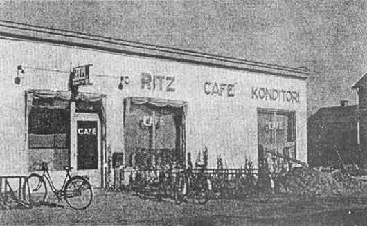
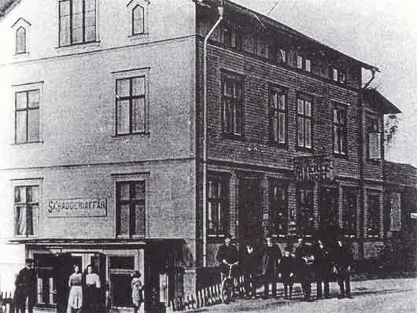
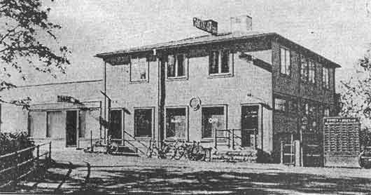
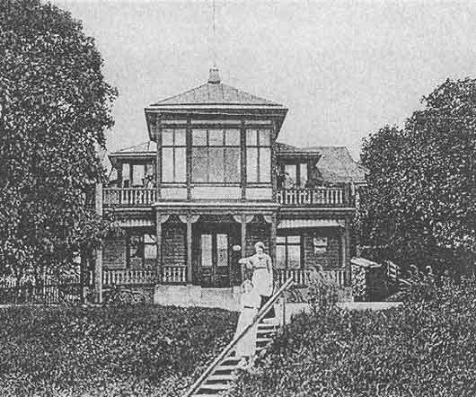
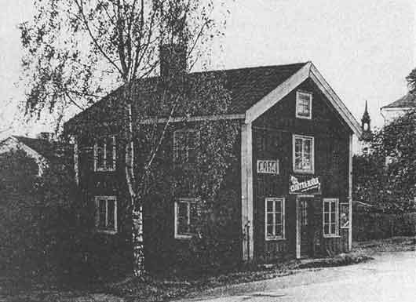
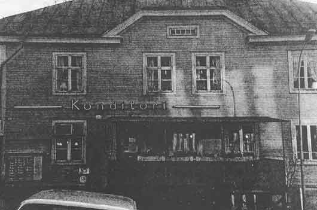
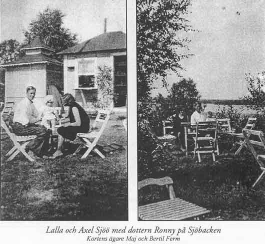
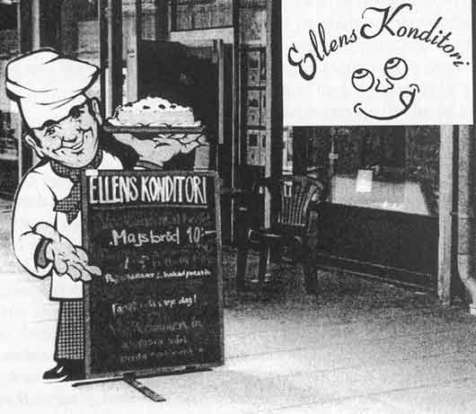

Minnenas kaféer i Ockelbo
av Elsa Eriksson
Minns du? Kommer du ihåg? Säger många när de tänker tillbaka på de
många kaféer som fanns i Ockelbo.
Man ser en lyrisk blick i deras ögon när alla minnen dyker upp.
Här följer en bildserie om de olika kaféerna sammanställt av Elsa Eriksson
Ritz Café & Konditori
Rörelsen som startades av fru Lundberg år 1908, drevs till 1939 av olika
ägare.
Då övertog Aug. Andersson f 1872 och hans hustru Alma f Henriksson
f år 1895. Brödbutik och serveringslokaler var modernt inredda.
Kaféet hade klubbrum för sammankomster.
Källa: Sveriges privata företagare 1943

Röda lyktan
Norra Åsgatan
Byggnaden är uppförd år 1900. Här fanns Perssons skrädderi fram till
år 1914, när Skräddar Perssons fastighet byggdes mittemot.
Kortet är från den tiden.
1929 eller 1930 öppnade Agda Owetz, hustru till lokförare Oscar Owetz
ett kafé här. I röda lyktan fanns två serveringsrum.
Varför det hette Röda Lyktan har ännu ingen kunnat förklara,
men många har säkert minnen från detta kafé.
1940-talet fick kaféet namnet Kaffestugan, ägare Anna Crantz.
Källa: Muntlig uppgift

Strand Caféet
Huset byggdes år 1898. År 1921 startade Per Persson f 1897 eget företag
i Ockelbo, med bageri för grovt (spisbröd) och fint bröd samt konditorivaror.
29 april 1936 inlämnades till handelsregistret om bageri, handels och kafé-
rörelse med namnet Strand Café E. Persson. Huset revs 14 augusti 1981.
Källa: Sveriges Privata Företagare 1943, Gefle Dagblad

Centralcaféet
även kallad Lundholms kafé
Detta kafé fanns förut i Strimbolds fastighet,
och i Lunds fastighet söder om torget.
Det anses vara det äldsta kaféet i Ockelbo.
Från år 1924 fanns kaféet på denna plats, med kaffeservering även ute i
trädgården. En trätrappa gick ned mot grönområdet.
Centralcaféet slutade år 1979, men wienerbröd bakades
även en tid efter detta år (muntlig uppgift).

Lundins kafé
Huset ansågs vara en 1700-tals gård och marken var ett torpställe under
prästjorden och friköptes av den siste brukaren Per Fröberg.
År 1923 startades kaférörelse av fru Karin Sundberg.
Andra innehavare var Lalla Sjöö och Elsa Karlsson.
Från 1941 drevs kaféet av K.W. och Gertrud Lundin.
Huset revs år 1958 när Upplands Enskilda Bank
skulle uppföra en fastighet där.

Lindströms Konditori
År 1928 började Oskar Levin sin rörelse under namnet Levins Konditor.
Åren 1942-1951 var det Georg Forsblom som drev konditoriet.
Åren 1951-1955 hette ägaren John Erik Fabian Hall.
Från 1955 hette kafét Lindströms Konditori och så hette det tills huset revs.
Den 10:e november 1984 var det sista dagen som konditoriet var öppet.
Det fanns gott kaffe och goda tårtor.
Agneta-tårtan, som komponerades till dotterns 15-årsdag, och som sedan
bakades efter beställning, var utsökt god och känd över hela Gästrikland.
Där fanns också sammanträdesrum för uthyrning.
Källa: Handelsregistret

Sjöbackens sommarservering
en oas i Ockelbo vid Bysjöns strand
Det forna namnet på backen är Prästhagen,
eftersom området tillhörde prästjorden.
Betande kor strövade omkring där på somrarna,
och det var ett stort område för det var obebyggt
utom längst ned där Berglund bodde
och ett par gårdar lite längre norrut.
1928 startade serveringen av Lalla Sjöö,
och det är alltså 75 år sedan.
Hon och maken lade ner mycket arbete
för att få det trevligt runt serveringen.
I slänten ner mot sjön byggdes avsatser skilda åt genom häckar.
På terrasserna stod vita trädgårdsmöbler
och där fick gästerna sitta och dricka kaffe, med utsikt över Bysjön.
Fåglarna kvittrade i lövverket och på försommaren spred sig
en doft av liljekonvaljerna över hela Sjöbacken.
1963 byggdes badstranden och bryggor lades ut.
Sjöbacken ägs av Ockelbo kommun.
Leif och Siv Lindgren skötte serveringen i 27 år fram till 1990
och de var väldigt omtyckta av ungdomarna.
Serveringen utarrenderades år 2003 till Martin Lenell.

Ellens Konditori
i Centrumhuset
Startades 1997 av ägarna Helén och Daniel Rosén.
Där kan man dricka gott kaffe och köpa gott bröd, bakat av sockerbagaren.
Även lunchgäster kan köpa pajer, soppor och smörgåsar.
Ellens Konditori ligger centralt till för såväl Ockelbo-bor som turister.
ockelbo.nu redaktionen informerar att Ellens Konditori har bytt
ägare
och heter nu Café Trillin

Denna artikels innehåll har hämtats från
Ockelbo
Hembygdsförenings årsskrift Pålsgården 2003